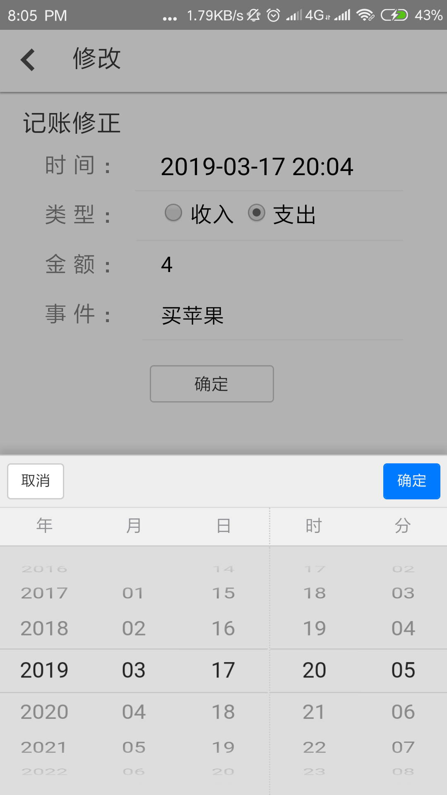

账单记录说明
 步骤一
步骤一
首次进入下方两个选项，一个是语音输入，另外是键盘输入，点击带有语音图标的按钮，由此进入语音界面，点键盘，开始键盘输入。
步骤二
语音输入时，点击中间的按钮并按住以语音。松开按键可选择重新录制或发送。键盘输入时，输入文字后点提交。系统分析之后会得出结果，点击出现的结果右侧按钮可进行修改。
账单修改说明

步骤一
进入修改页面后，点击时间下方会出现时间选择器，可自行选择。支出收入类型，涉及金额，涉及事件可自行填写，之后点确定即可
详细及报表说明
详细
详细页面，默认显示当日详细，点击日历可选择其他日期详细消费情况。
报表
进入报表页，默认显示当前月总览。折现图右侧点击对比，可将上月与本月消费进行对比。收支柱状图轻触可查看当日收支总额。